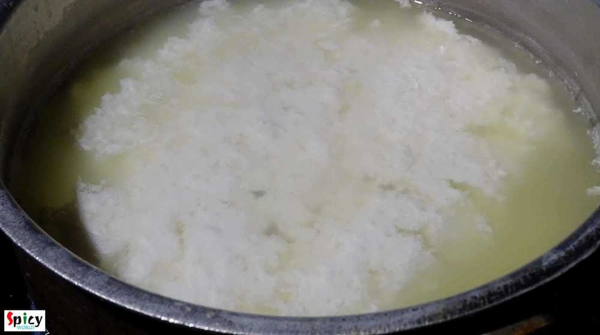
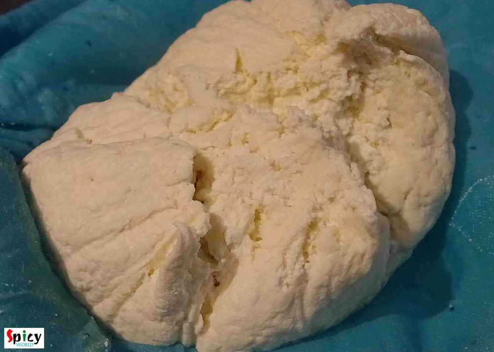
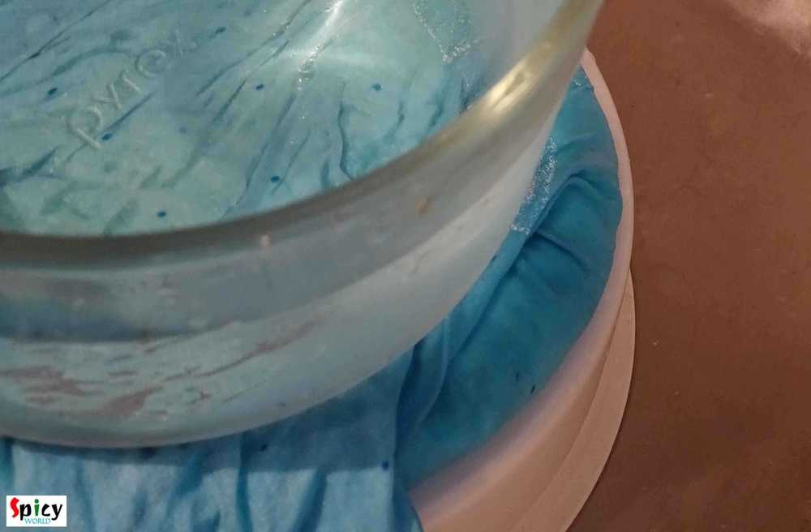

Simple and Easy Recipes
Paneer (Indian Cottage Cheese)
© 2016 Spicy World, Published on: Dec 5, 2015
In vegetarian world 'paneer' plays a very important role. But in nonvegrtarian world it also offers various special dishes. Homemade paneer has its own frshness and taste. There is no comparison between homemade and store bought. I always use homemade fresh 'paneer' in my cooking. You can make several dishes with this. So, try this in your kitchen and I can give you guarantee that you will never buy from store again.
")
Ingredients
- Full fat milk 2 lt.
- 2 - 3 lemon's juice.
")
Steps
Take a vessel, pour the milk. Bring it to boil. Stir with a spatula occasionally.
When it starts boiling add the lemon juice. You can add beaten curd / vinegar also instead of lemon juice.
Turn of the gas. Stir half times. Do not stir frequently.
When the milk curdles strain the water.
Wash the curdled milk in cold water for 2-3 minutes. Again strain the water.
Put the curdled milk in a thin cloth. Squeeze the excess water with the pressure of your hand.
Then put the entire thing under a pressure like a big glass bowl with water for 2 hours.
For this pressure the curdled milk will set as paneer.
Then remove the pressure and cloth. Cut the paneer in cubes or any shape of your choice.
Your paneer is ready ...
Cook this paneer with any gravy or as appetizer ...
 (Final)")